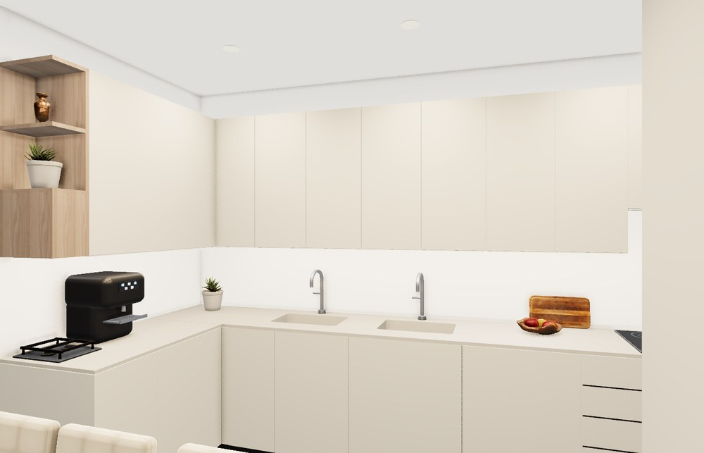

עובד הכי טוב במחשב. הטעינה לוקחת כמה שניות.
מה עושים שם
- מסתובבים במטבח: גרירה בעכבר לסיבוב, גלגלת לזום, קליק ימני להזזה.
- בוחרים מבט: מהכניסה, מפינת האוכל, מבט-על ועוד.
- סיור אוטומטי: המודל עובר לבד בין כל המבטים.
- מחליפים תאורה: יום וערב.
- שומרים תמונה מכל זווית שתרצו.
איך עושים את זה, צעד אחר צעד
ההדרכה נתנה את הבסיס: קודם חלל מאושר, ורק אחר כך תמונות. כאן אותו בסיס, מותאם לנגרות ולמטבח. במקום תמונה מתוך שיחה, בונים מודל שאפשר לפתוח, לסובב ולצלם ממנו שוב ושוב.
מכינים את החומר וקוראים את התוכניות
מעלים: מבט-על ופריסות (חזיתות) של הנגרות כ-PDF, מפרט חומרים, ותמונות של פריטים שבחרתם (כיסא, ברז, בר מים).
מבקשים: "קרא את התוכניות בלבד. הצג טבלה: פריט | מידה | מקור (גיליון) | ודאי / חסר / הנחה. רשום סתירות בין גיליונות, ואל תפתור אותן בשקט."
מקבלים: טבלת מידות, שאלות על מה שחסר, ורשימת סתירות. עונים לשאלות לפני שבונים.
בונים מודל בלי עיצוב
מעלים: כלום חדש, באותה שיחה.
מבקשים: "בנה כל יחידה כקופסה לפי המידות. סמן כל רכיב "ודאי" או "הנחה". הפק קובץ HTML עצמאי עם סיבוב, הסתרת שכבות, ולחיצה על רכיב להצגת מידותיו ומקורו."
מקבלים: קובץ אחד (MODEL_v01) שנפתח בדפדפן, בלי אינטרנט.
בודקים מול התוכנית ומאשרים
מעלים: כלום חדש.
מבקשים: "בדוק את המודל מול התוכנית: סכום המידות לאורך כל קיר, פתחים, מיקום מכשירים. בצע רק את התיקונים האלה: [רשימה]. שמור גרסה חדשה."
מקבלים: גרסה מתוקנת ורשימת שינויים. כשמרוצים כותבים: "אני מאשר את MODEL_v02 כבסיס להדמיה".
מלבישים חומרים ומוסיפים ריהוט
מעלים: מפרט החומרים ותמונות הפריטים (לחומרים וסגנון בלבד).
מבקשים: "החל חומרים לפי המפרט בלבד. מה שלא נקבע, כתוב "לא נקבע" והצג כהנחה ניטרלית. אל תמציא חומר."
מקבלים: מודל עם חומרים, וגם רשימת סטיות. כך רואים מה נקבע בתוכנית ומה נוסף רק להמחשה.
מצלמים, וכשצריך משנים דבר אחד
מעלים: מבט-על עם עיגול איפה עומדים וקו לאן מסתכלים.
מבקשים: "צור מצלמה בנקודה ובכיוון שסימנתי. אחר כך: "השינוי היחיד: [יחידה], למידה או חומר [ערך]. עדכן קודם את המודל ושמור גרסה חדשה"."
מקבלים: תמונה מכל זווית שרוצים, והמטבח לא משתנה בין תמונה לתמונה.
הפרומפטים המלאים לכל שלב, כולל מסלול הנגרות, נמצאים בערכת הפרומפטים שכבר קיבלתם.
לערכת הפרומפטים (מסלול נגרות)למה זה שונה מהדמיה רגילה
בהדרכה למדנו איך לא לאבד את החלל כשמשנים דבר אחד. כאן הרעיון הפוך: בונים את החלל פעם אחת, במידות, וכל תמונה נלקחת ממנו. החלל לא יכול להתהפך, כי הוא לא נוצר מחדש בכל תמונה.
ועכשיו אני רוצה לשמוע מכם
שלוש שאלות, כל אחת בלחיצה אחת. התשובות קובעות מה אכין לכם במייל הבא.
איך הלך עם ההדרכה הקודמת?
מה הכי הייתם רוצים לשמוע על AI באדריכלות?
באיזו מידה אתם משתמשים היום ב-AI בעבודה?
ומה חסר לכם? משימה שחוזרת כל שבוע, או כלי שעוד לא מצאתם. כתבו לי כאן, גם שורה אחת מספיקה.